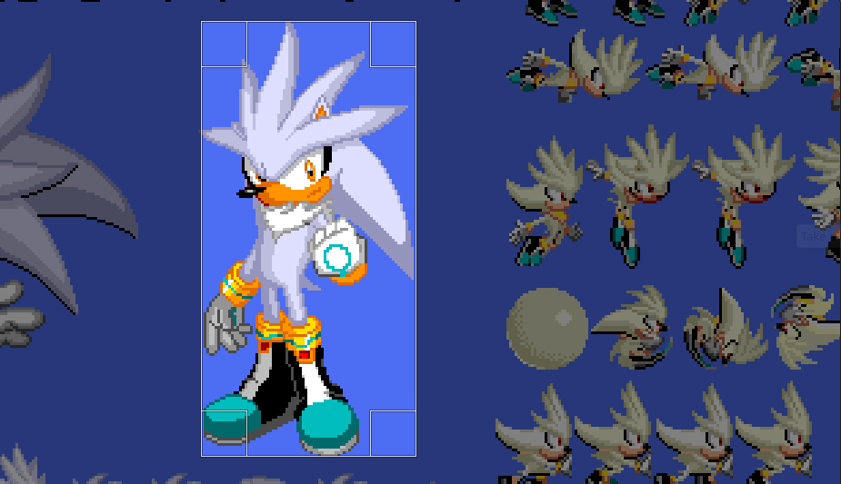
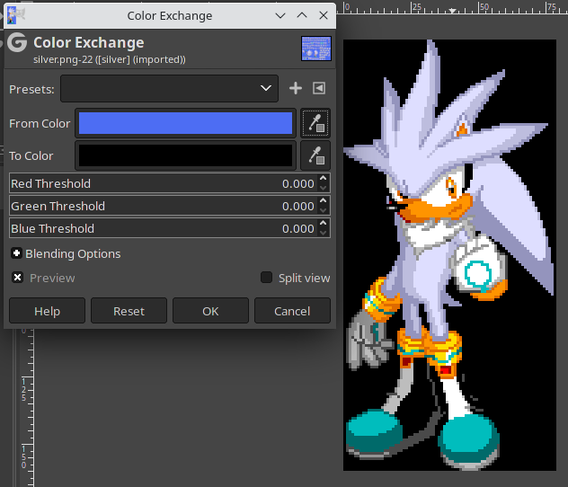
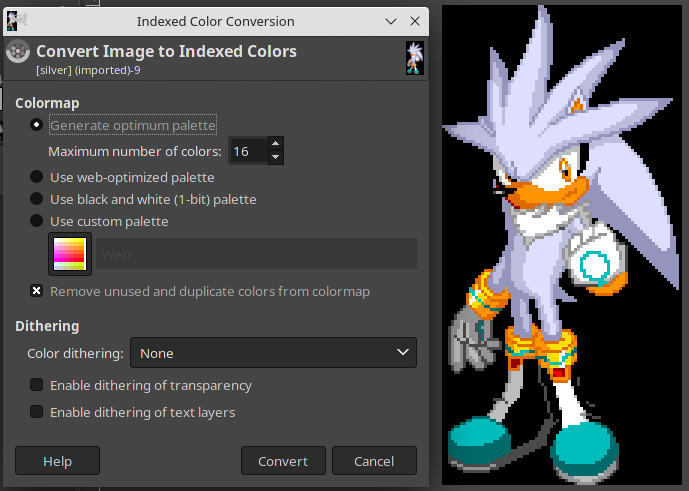
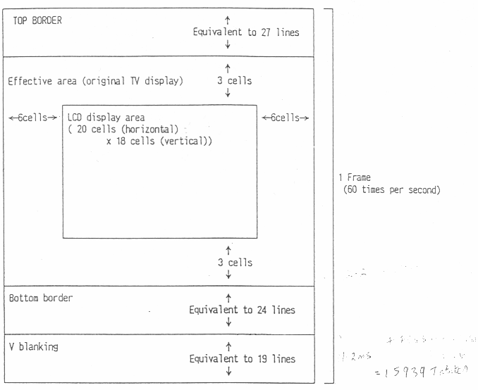

In the last lesson you learned about the hardware in the Game Gear. In this lesson we'll put that knowledge to use.
So far, we have run real code on the GG, but it wasn't very interesting. All the code did was automatically load a simple font into the VDP and print a string. We as the programmer barely even had to go anything---devkitSMS took care of everything.
We've got a few files this time. Start by downloading five
files: silver_tiles.c,
silver_tiles.h,
silver_palette.h, silver_tilemap.h, and silver_tilemap.c. Place them in a directory, and
copy or link the necessary files
(SMSlib_GG.lib, SMSlib.h, etc.) into
that directory.
Once you have those, copy and paste this code
into silver.c in the same directory as just before.
#define TARGET_GG
#include "SMSlib.h"
#include "silver_tiles.h"
#include "silver_palette.h"
#include "silver_tilemap.h"
SMS_EMBED_SEGA_ROM_HEADER(1, 1);
SMS_EMBED_SDSC_HEADER_AUTO_DATE(1, 0, "Liam Hays", "Silver: Lesson 3",
"Silver the Hedgehog on screen");
void main() {
SMS_loadTiles(silver_tiles, 0, silver_tiles_length);
SMS_loadTileMapArea(6, 3, silver_tilemap, 10, 20);
GG_loadBGPalette(silver_palette);
GG_loadSpritePalette(silver_palette + 32);
SMS_displayOn();
while (1);
}
You should now have a total of six source files. To compile, use these commands:
sdcc -c -mz80 --peep-file peep-rules.txt silver_tiles.c
sdcc -c -mz80 --peep-file peep-rules.txt silver_tilemap.c
sdcc -c -mz80 --peep-file peep-rules.txt silver.c
sdcc -o silver.ihx -mz80 --no-std-crt0 --data-loc 0xC000 crt0_sms.rel silver.rel silver_tiles.rel silver_tilemap.rel SMSlib_GG.lib
ihx2sms silver.ihx silver.gg
This is a good time to set up GNU make or a similar
build system (though something as complicated as CMake probably
isn't worth it). If you're using make, just put all
five of those commands under an all: target.
Once silver.gg has been compiled, open it in
Emulicious. You should see a familiar face:
This example is actually only a little more complicated than the example in Lesson 1.
First we include all the data to display on the screen. We'll learn more about the correct way to do this in a bit.
#define TARGET_GG
#include "SMSlib.h"
#include "silver_tiles.h"
#include "silver_palette.h"
#include "silver_tilemap.h"Then we set up the ROM header and SDSC header.
SMS_EMBED_SEGA_ROM_HEADER(1, 1);
SMS_EMBED_SDSC_HEADER_AUTO_DATE(1, 0, "Liam Hays", "Silver: Lesson 3",
"Silver the Hedgehog on screen");
Once that is complete, we load the tiles that make up Silver,
the tilemap area to display him, and the tilemap palette, all
in main(). I'll explain more about these functions
much later on.
SMS_loadTiles(silver_tiles, 0, silver_tiles_length);
SMS_loadTileMapArea(6, 3, silver_tilemap, 10, 20);
GG_loadBGPalette(silver_palette);Finally, we turn on the display and enter an infinite loop. Note that "turning on the display" doesn't affect anything on the GG's screen hardware; instead, the VDP only generates video output when the display is on. The display is off at power-on, and when the display is off, we can write data to the VDP and VRAM whenever we want. When the display is on, we have to be more careful and parsimonious about when we write to the VDP and VRAM.
We also enter an infinite loop for safety: while it's unlikely, it is possible that the Z80 will keep reading data in the compiled GG binary and try to use it as code. That could result in adverse effects, like corrupting data in VRAM or Z80 RAM.
SMS_displayOn();
while (1);The image of Silver didn't get on screen magically. To convert an image to the GG takes a bit of work in any circumstance, but luckily there are tools that make it easier.
I started by downloading a sprite sheet of Silver from the page on The Spriter's Resource for The S Factor. I also used GIMP for all the editing.
I then cropped out the large image of Silver standing, facing the camera. If you crop exactly to his bounding box, the resulting image is 79x160 pixels. This is clearly not an integer multiple of 8x8, so I cropped it to 80x160 pixels.
I then cropped Silver out and saved him to a new file. In the new file, I used GIMP's Color Exchange tool to convert the blue background to black. You could convert the blue to any other color as well, but it's better to use one that's already in use on Silver himself, so that his color fidelity isn't reduced. If you used a color for the background not in use on Silver, that color would take up a slot in the palette and reduce the number of colors used on Silver.
We're almost finished modifying the image. Once Silver was cropped properly and his background adjusted, I converted the image to indexed color. Indexed color means that the image is stored with a palette, and each pixel is a reference to a color in the palette. We need indexed color because the tool we'll be using to convert to the GG tile format only works with indexed color PNGs.
Since we're going to be displaying Silver using only the tilemap, we have to use only 16 colors when converting to indexed color. You should see Silver's appearance change sightly after converting; for me his muzzle and arm ring things became more yellow.
Last step: export the image to a PNG. I used compression level 5, but it shouldn't really matter. Just make sure you know where the file is, since we'll be using a command-line tool to convert it.
There are other ways to do this, but I believe the best way to
convert an image to GG tile format is with the
tool png2tile. png2tile
takes PNG input and can create tiles, tilemaps, and palettes,
for both the Master System and Game Gear palette formats, and
most importantly, can output them in binary files.
(digression) Most SMS/GG coding beginners are directed toward
Maxim
Zhao's bmp2tile. bmp2tile
supports multiple image formats, compression, and can even
optimize the tiles to remove duplicates and use
horizontal/vertical flipping for the tilemap. However, I have
found it to be buggy (or, at least, I'm not using it right), and
it's written in C#, so running it on anything besides Windows is
difficult at best.
(digression continues) bmp2tile also only creates
output useful for assembly programming. For C programming, you
have to convert that output manually into a C array, and it's
not really worth the time. png2tile can make binary
output, which is much more easily converted to C arrays.
(digression over) Let's convert Silver to GG data. Go
get png2tile and compile it. (I will eventually
host Windows binaries on this site.) Then, run it like this,
assuming the cropped and indexed image is silver.png:
./png2tile silver.png -savetiles silver_tiles.bin -savepalette silver_palette.bin -savetilemap silver_tilemap.bin -pal gg -binary
This will tell png2tile to create tiles, a palette
in GG color mode, a tilemap, and save it as various files in
binary format. png2tile needs the input PNG to be a
8x8 multiple image, hence why silver.png is 80x160.
This is a good opportunity to discuss something important about
data management for projects like this. DO NOT STORE DATA IN
HEADER FILES! This guidance was first brought to my
knowledge when I dabbled in homebrew programming for the Game
Boy Advance, by J
Vijn's guide
for the tonclib library.
Here's why: you probably already know that good practice in C
programming is to never #include anything but
header files. However, header files are supposed to only contain
declarations and macros. If you load up a bunch of header files
with thousands of lines of raw data, then the compiler will
recompile that data every time you compile your
project. Even though modern compilers and computers are
capable enough to handle this, it will still slow down
compilation and can increase the risk of "multiple declaration"
errors, which are notoriously hard to fix.
This advice rings particularly true for a devkitSMS
project, because compiling a complete project is done in two
steps. If data is stored outside of header files, each file can
be compiled separately and linked together at the end. Assuming
you have a correctly configured build system, you can take this
one step farther and only compile the modified files on each
build. The linker will then link each individual data and code
object file together and produce the output binary.
So here's how you do that. We'll use the actual source files
that make Silver, in this case, silver_tiles.h
and silver_tiles.c. silver_tiles.h
contains the following:
#pragma once
extern const int silver_tiles_length;
extern const unsigned char silver_tiles[4480];
The header file has an include guard, in this
case, #pragma once. This is also good practice, as
it prevents a header file from being included at multiple places
by the preprocessor.
Each variable is defined as extern
const. An extern variable means that there
is another declaration of that variable in a source file,
and const tells SDCC to place the variable in ROM
so the Z80's meager 8K of RAM doesn't overflow.
Then, silver_tiles.c contains this:
#include "silver_tiles.h"
const int silver_tiles_length = 4480;
const unsigned char silver_tiles[4480] = {
0x00, 0x00, 0x00, 0x00, 0x00, 0x00, 0x00, 0x00, 0x00, 0x00, 0x00, 0x00,
0x00, 0x00, 0x00, 0x00, 0x00, 0x00, 0x00, 0x00, 0x00, 0x00, 0x00, 0x00,
// ( ... trimmed ... )
};
It is nothing more than the definitions for the two
variables. However, note that there are no externs in
the source file.
With that said, let's convert the data to a C array. I am using
the Linux tool xxd, which can automatically convert binary
data to a C
array. Here
is a Windows build, which should be identical in
functionality. It is a command-line tool in any circumstance.
Run xxd with the -i flag, like this, on
each of the tile, tilemap, and palette binary files:
xxd -i silver_tiles.bin
xxd will make two variables, one for the array and
one for the length of the array. It prints out the contents of a
file to the terminal, so you probably want to use some kind of
redirection to a file. Create a header file like the example
above, give the array a length (but keep the length variable,
we'll need it later), and make the
variables const. #include the header
file in your main source file---or wherever it's needed---and make
sure your compilation process will also compile the matching
source file for that header file.
One more thing worth noting: I did not move the data
in silver_palette.h into a C source file. It is
only 32 bytes long, and I am lazy. In a real game or project,
you would have many different palettes, and you might even want
to group their declarations together into one header.
Remember about forty thousand lines ago how I mentioned that I would explain those function calls in more depth? Well, here we go. First, here's the same functions again.
SMS_loadTiles(silver_tiles, 0, silver_tiles_length);
SMS_loadTileMapArea(6, 3, silver_tilemap, 10, 20);
GG_loadBGPalette(silver_palette);
SMS_loadTiles() is a macro that copies tiles into
VRAM. It is actually a macro, and it maps to the
function SMS_VRAMmemcpy(). Fortunately, we don't need
to know about the latter function, and SMS_loadTiles()
has a simple syntax:
SMS_loadTiles(src, tileFrom, size);
src is a pointer to the tiles to copy into
VRAM. tileFrom is the tile index in VRAM to copy
to. size is the number of tiles to copy. So
SMS_loadTiles(silver_tiles, 0, silver_tiles_length);
will copy silver_tiles_length tiles from the array
(aka the pointer) silver_tiles into tile index 0 in
VRAM.
Then we load the tilemap into VRAM. The tilemap as generated
by png2tile can't be directly loaded---if you do
that, using SMS_loadTileMap(), the result is this
mess:
Instead, we use the function (actually, it's a macro again that
just calls a function to copy to
VRAM) SMS_loadTileMapArea(). It takes five
arguments: X location to copy to, Y location to copy to, array
to copy, X dimension of the tilemap area, and Y dimension of the
tilemap area. So
SMS_loadTileMapArea(6, 3, silver_tilemap, 10, 20);
will copy the data from silver_tilemap to tilemap
coordinate (6, 3), and copy a tilemap that is 10 by 20
tiles. Using this function instead
of SMS_loadTileMap() will write empty entries in
the tilemap to make the tilemap fit the area it is supposed
to. That's why Silver looks right, and not like the mess he does above.
Finally, we copy the palette to the VDP using the function (not
a macro this time) GG_loadBGPalette:
GG_loadBGPalette(silver_palette);This function takes one argument and copies 16 colors from it into the tilemap palette. The tilemap is sometimes called the background, abbreivated BG, hence the function's name.
We're nearing the end of this lesson. There's only one more thing to talk about, and I saved it for this lesson instead of the last one because it's best understood once you have actually manipulated the tilemap.
As I mentioned before, the VDP creates an image large enough to fill a traditional CRT TV screen. However, the GG LCD screen is obviously much smaller than a TV screen, so it only displays a portion of the full image. This is best explained by an image, actually from Sega's official documentation:

In that image, what Sega calls "cells" are actually tiles. The
important thing, though, is the 20x18 tile box labeled "LCD
display area". Note how it is offset 3 tiles below and 6 tiles
to the right of the upper left of the original TV screen. This
box is what the LCD actually shows, and you have to design your
game or program with that box in mind, while also accounting for
the fact that the rest of the screen is still virtually
there. That's why we tell SMS_loadTileMapArea() to
load a tilemap starting at (6, 3)---otherwise the image will be
offset incorrectly and might not even be visible.
We did a lot in this lesson. We ran a real project, converted an
image to GG format, learned good coding practices, discussed
some actual devkitSMS functions, and learned about
the GG's LCD and how it connects to the VDP's output.
In the next lesson, we'll look at more interesting and complicated things with tilemaps, start using sprites, and learn about how to time a program to the VDP, which is one of the most important aspects of programming for the GG.